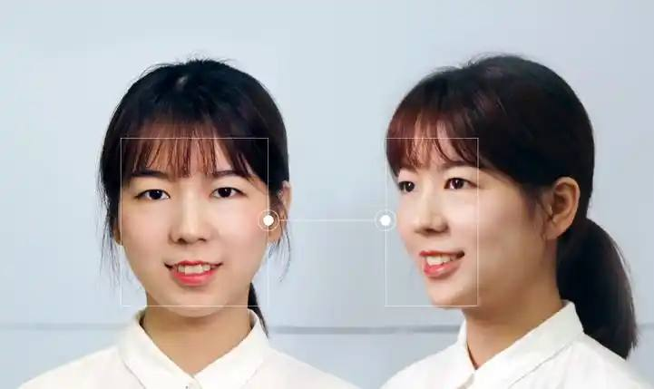
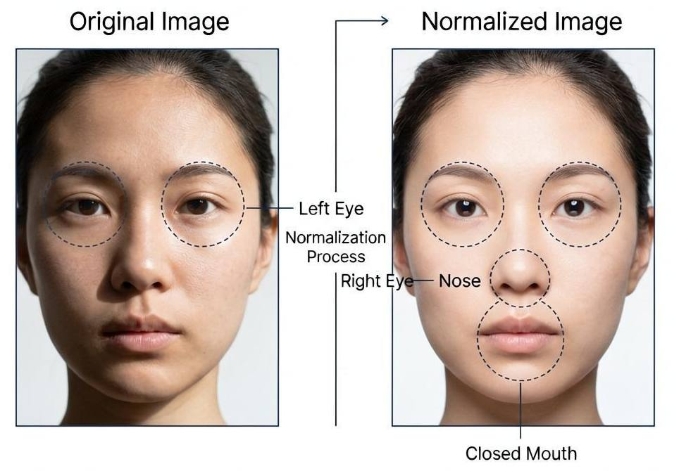
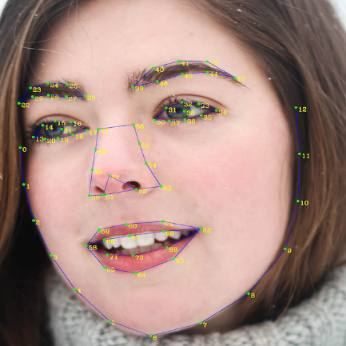
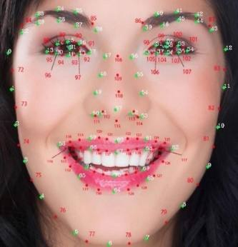
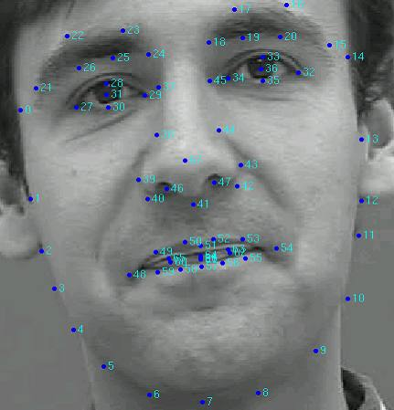
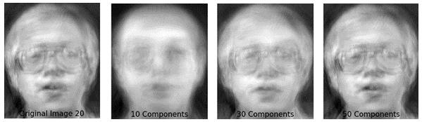
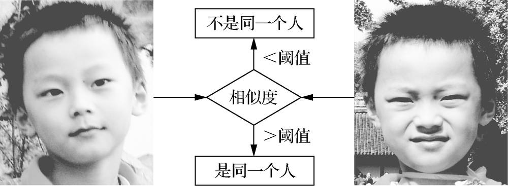

第 1 页 · 2 人脸识别技术
2 人脸识别技术

模块4：体验计算机视觉


第 2 页 · 人脸认证是如何实现的呢？

人脸认证是如何实现的呢？
第 3 页 · 一、人脸识别技术发展概述
一、人脸识别技术发展概述
20世纪50年代，已着手对人脸识别展开研究
20世纪60年代，人脸识别工程化应用研究正式开启
21世纪的前10年，基于遗传算法、支持向量机等方法进行人脸识别
2009～2012年，局部二进制模式成为研究热点
2014年前后，深度学习方法成为人脸识别主流，精度达到99.15%以上
如今，AMD-FV等改进深度学习算法，精度可以达到99.75%以上
第 4 页 · 二、人脸识别关键技术
二、人脸识别关键技术

人脸识别系统
第 5 页 · 二、人脸识别关键技术
二、人脸识别关键技术

人脸识别系统

人脸扶正
图像增强

归一化处理
第 6 页 · 二、人脸识别关键技术
二、人脸识别关键技术

人脸识别系统
72个关键点
150个关键点
基于ASM技术的人脸关键点




原始图像与特征人脸图
第 7 页 · 二、人脸识别关键技术
二、人脸识别关键技术
人脸识别系统
人脸比对
人脸搜索

第 8 页 · 开发一个简单的人脸识别程序
开发一个简单的人脸识别程序

| 关键功能 | 其它要求 |
| 能实时标记人脸框 | 界面友好美观 |
| 能显示识别的人名（预设） | 最好能离线使用 |
| 待识别人可更换 | 代码量尽量少 |
| 按Q键退出 | 使用简单 |
第 9 页 · 学生分享及教师点评
学生分享及教师点评

| 分享要点 | 分值 | 计分 | 教师点评 |
| 1、你完成任务使用的主要工具？ | 10 | 合理使用AI工具 | |
| 2、与其他同学进行了怎样的充分讨论？ | 10 | 集思广益、团结协助 | |
| 3、你的程序满足关键功能吗？ | 30 | 聚焦核心功能，全力以赴 | |
| 4、其它要求方面，你的程序是否也都满足？ | 20 | 注意细节，精益求精 | |
| 5、你的程序中人脸识别是调用哪个应用接口实现的？ | 20 | 举一反三，知其所以然 | |
| 6、其它（含逻辑、表情、主动、清晰、流畅、自信等） | 10 | 能说、亲和、善用、精技 |
第 10 页 · 子任务3：语音提示处理
子任务3：语音提示处理

视通万物
以智赋行